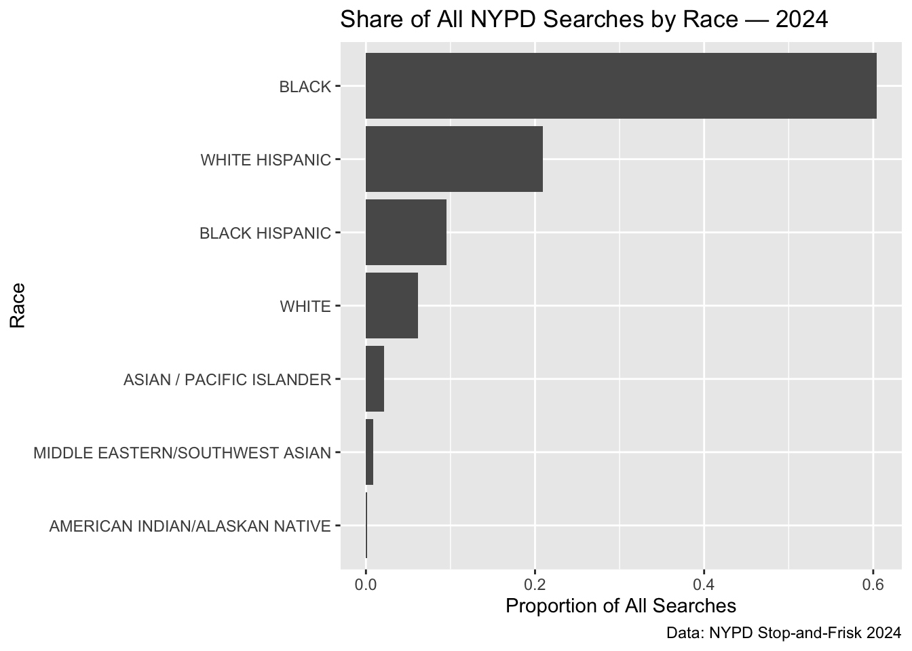
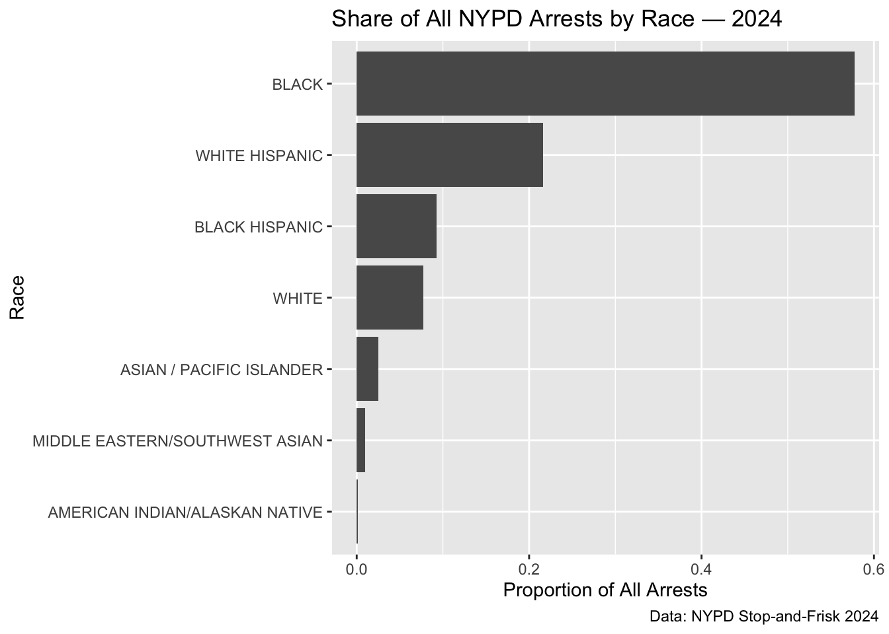
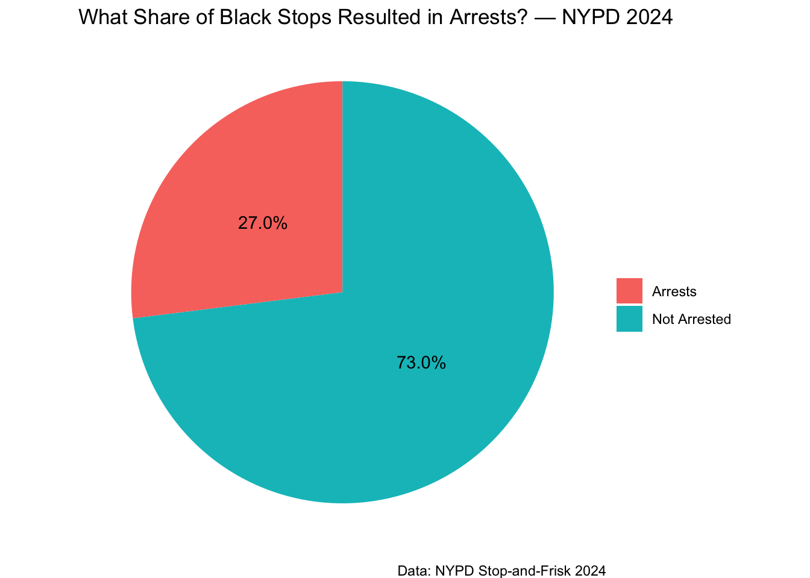

Weaponized Data in the AFST
The Allegheny Family Screening Tool and the Ethics of Predictive Welfare Surveillance
What Is the AFST and Why It Matters
The Allegheny Family Screening Tool (AFST) is an algorithm used by Allegheny County, Pennsylvania to help child welfare workers decide whether to investigate a hotline call about child neglect. When a report is filed, the system automatically pulls information from multiple public databases—welfare benefits, criminal justice involvement, juvenile probation, mental health records, and public school data—and uses that information to generate a risk score from 1 to 20, meant to predict the likelihood that a child will be removed from the home within two years.
According to the Pulitzer Center (Ho & Burke, 2022), the AFST was developed to help caseworkers manage high call volumes, reduce human bias, and allocate agency resources efficiently. The system is often described as a neutral, objective supplemental tool designed to assist human decision-making. However, as Ballantyne (2023) argues, the algorithm operates in a high-stakes context—its predictions can shape whether families experience intrusive investigations, heightened state surveillance, or even the possibility of temporary or permanent child removal. This combination of administrative data, predictive modeling, and discretionary state power makes the AFST a powerful example of the data science ethical dilemmas highlighted in Data Feminism, including the central questions: Who benefits? Who is harmed? and Whose priorities are embedded in the system?
In what follows, I examine four core ethical issues—consent, representativeness, unintended data use, and racial proxies—and analyze how each plays out within this human-algorithm collaboration between social workers and algorithmic predictions.
#1 Consent Structure
The AFST raises significant concerns about whether meaningful consent is possible. Families whose information populates the system never knowingly agreed to have their welfare, education, or criminal justice records combined into an algorithmic decision-making tool. The Pulitzer Center article emphasizes that most families do not even know the algorithm exists, much less that it influences whether a caseworker opens an investigation into their home (Ho & Burke, 2022). This means that, despite the deeply personal nature of the data involved, individuals cannot control how their information is used, cannot opt out, and cannot reasonably understand how ordinary interactions with public systems—such as applying for food stamps or receiving school attendance letters—may later be treated as risk indicators.
Ballantyne (2023) further notes that consent is complicated by the inherent power imbalance between families and the state agencies that collect their data. Families interacting with welfare, education, or criminal justice systems typically have no choice but to provide information as a condition of receiving services or complying with legal requirements. This is not voluntary participation in research—it is coerced disclosure embedded in structural inequality. Therefore, informed consent is not only absent; the very possibility of informed consent is undermined by the conditions under which the data are collected.
#2: Who Was Measured / Representativeness
A core issue is who appears in the dataset. The AFST trains exclusively on data from families who interact with public systems, meaning poor and disproportionately Black families are the ones most heavily monitored. The Pulitzer Center makes clear that the algorithm draws from welfare records, school data, public mental health services, and criminal justice involvement—systems that are not evenly distributed across socioeconomic lines (Ho & Burke, 2022). Families with higher income who use private healthcare, private schools, or do not rely on public benefits leave far fewer digital traces and therefore remain largely invisible to the model.
This creates a severe representativeness problem. The algorithm purports to assess risk for children across the county, but in practice, it can only “see” those who are already hyper-surveilled through state systems. As Ballantyne (2023) points out, the model does not measure underlying risk; it measures exposure to public institutions. This means the AFST may conflate poverty with danger, treating structural disadvantage as evidence of impending neglect. From the perspective of Data Feminism, this demonstrates how power operates—the groups already monitored by the state become the objects of even greater scrutiny.
#3: Is the Data Being Used in Unintended Ways?
The AFST’s use of administrative data illustrates a classic case of function creep, where information collected for one purpose is repurposed for a different, often more punitive, goal. Welfare records were originally gathered to distribute benefits, school records to track educational progress, and criminal justice data to document legal processes. But according to the Pulitzer Center, this disparate information is now merged to generate family risk scores (Ho & Burke, 2022). The algorithm reframes routine or structural conditions—such as unemployment, food insecurity, or living in a heavily policed neighborhood—as potential indicators of future child maltreatment.
Ballantyne (2023) argues that this repurposing fundamentally changes the meaning of the data: information that once signaled a need for support now becomes evidence the state could act upon. This raises ethical concerns about whether individuals should be subject to predictive analysis based on data they provided for unrelated administrative reasons. The recontextualization of data, without public awareness or consent, expands the reach of state surveillance under the guise of efficiency.
#4: Should Race Be Used? Is It a Proxy?
Even though race is not explicitly included as a variable, the AFST incorporates numerous proxy variables that reflect racial disparities. Variables such as zip code, welfare usage, school suspensions, juvenile probation, and arrest records are deeply correlated with race due to long-standing structural inequities. The Pulitzer Center article notes that these patterns cause families of color—especially Black families—to receive disproportionately higher risk scores (Ho & Burke, 2022). Removing the race variable does not remove racial influence; it only hides it behind factors shaped by residential segregation, policing practices, and unequal access to resources.
Ballantyne (2023) points out that the algorithm’s design reinforces existing inequities by reproducing the racial patterns embedded in the data. Instead of addressing the conditions that shape the data (poverty, discrimination, over-policing), the tool treats these structural forces as individual-level risk factors. This mirrors a key question from the Data Feminism framework: Is the issue really “bias in the algorithm,” or is the algorithm simply reflecting unjust systems that already exist?
Why This Matters:
The AFST illustrates how data science systems can shift power toward institutions and away from the people they govern. Who benefits? The county and its caseworkers gain efficiency and predictive tools that help allocate scarce resources. Who is harmed? Families who are already marginalized face heightened surveillance, invasive investigations, and greater risk of family separation. As Ballantyne (2023) emphasizes, even the best-intentioned human–AI collaborations can cause harm when they reinforce unequal power structures. And as the Pulitzer Center shows, the ethical dilemmas here are not hypothetical—the algorithm’s risk scores shape real decisions with life-altering consequences.
Ultimately, this case reflects the broader pattern described in Data Feminism: data science is often used “in the service of surveillance (of the minoritized) and efficiency (amidst scarcity).” The AFST is not just a technical tool; it is a form of governance that makes certain families more visible to the state while others remain unseen. It embeds social inequalities into mathematical form, presenting them as objective truth. This matters because data-driven decisions often carry an aura of neutrality that masks the power relations beneath. Understanding these dynamics is crucial if data science is to be used ethically and responsibly in social systems.
CASE 2: NYC, Stop and Frisk, and Predictive Policing.
This analysis explores the distribution of NYPD stop-and-frisk encounters across racial groups using publicly reported 2024 data. This approach highlights who appears in the administrative record, which is essential for understanding how predictive systems—whether in policing or child welfare—learn patterns of state surveillance rather than neutral patterns of risk.
Search rate by race:
Search Rate by Race

Arrest rate by race


Case 1 References
Ballantyne, N. (2023). The harm that data do: The case of the Allegheny Family Screening Tool. Medium. https://medium.com/@neilballantyne/the-harm-that-data-do-the-case-of-the-allegheny-family-screening-tool-5f9fca22e0b2
Ho, S., & Burke, G. (2022). An algorithm that screens for child neglect raises concerns. Pulitzer Center. https://pulitzercenter.org/stories/algorithm-screens-child-neglect-raises-concerns
Case 2 References:
Lum, K., & Isaac, W. (2016). To predict and serve? Significance, 13(5), 14–19. Royal Statistical Society. https://doi.org/10.1111/j.1740-9713.2016.00960.x Wiley Online Library+1
Joh, E. E. (2017). Feeding the machine: Policing, crime data, & algorithms. William & Mary Bill of Rights Journal, 26, 287–329. https://scholarship.law.wm.edu/wmborj/vol26/iss2/3 W&M Law School Scholarship Repository+2W&M Law School Scholarship Repository+2
Robinson, D., & Koepke, L. (2016). Stuck in a pattern: Early evidence on “predictive policing” and civil rights. Upturn. https://www.teamupturn.com/reports/2016/stuck-in-a-pattern Upturn+2Upturn+2
Kofman, A., & Scheiber, N. (2023, October 2). Predictive policing software terrible at predicting crimes. The Markup (with Northeastern University). https://themarkup.org/prediction-bias/2023/10/02/predictive-policing-software-terrible-at-predicting-crimes The Markup+2College of Social Sciences+2
Leadership Conference on Civil and Human Rights. (2016, August 31). Civil rights and tech advocates sound alarm on racial bias in “predictive policing.” https://civilrights.org/2016/08/31/civil-rights-and-tech-advocates-sound-alarm-on-racial-bias-in-predictive-policing/ Leadership Conference+2The Guardian+2
Wyden, R., et al. (2024, January 29). US lawmakers tell DOJ to quit blindly funding “predictive” police tools. WIRED. https://www.wired.com/story/doj-predictive-policing-lawmakers-demand/ WIRED